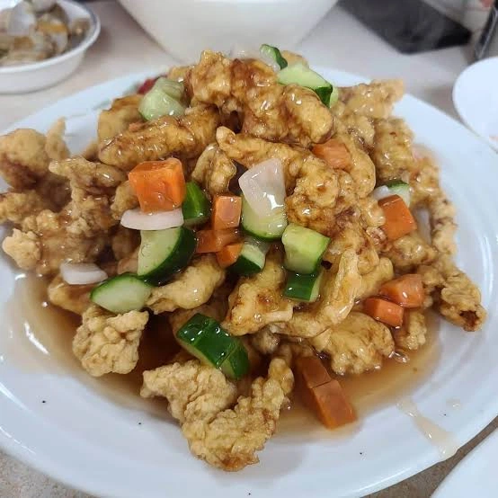
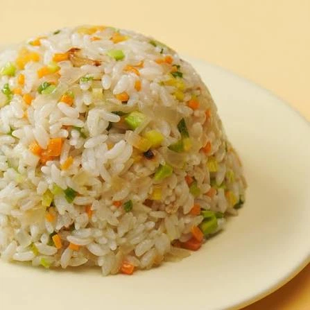
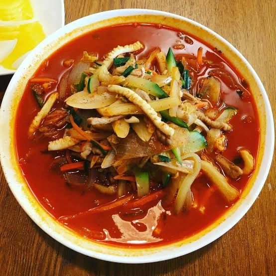
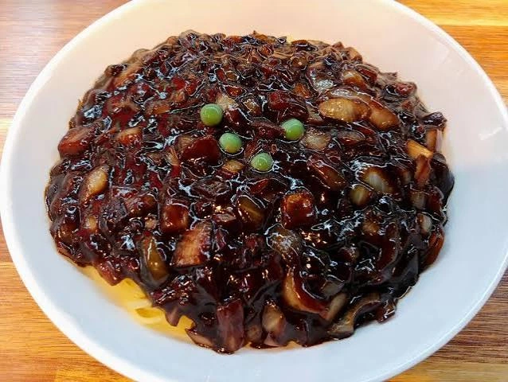

잘하는 집이어도 항상 한개가 찐빠남
4개다 잘하는 전설의 집이 있으면 반드시 우리집 주변엔 없음




잘하는 집이어도 항상 한개가 찐빠남
4개다 잘하는 전설의 집이 있으면 반드시 우리집 주변엔 없음
어디냐 빨리말해라 와이프 사무실이 답십리다!!!
미향 이라는곳임 거기 친구 회사 근처라서 친구들니랑 같이 먹어봤는데 갠적으로 개마싯더라
오케이 중식귀신인데 다뒤졌다!!근데 로드뷰 보니까 와이프가 맛있다고 데려갔던곳이네 ㅋㅋㅋㅋㅋ점심 코스 먹었었음.어쨌든 땡큐
거기 딴거없고 간짜장이나 차돌짬뽕먹으셈 차짬이 개지림 원탑은 차짬
어딘데 답십리 이사온지 2년 넘었는데 리*말고는 모르겠어
미향
댓참고
배달안하는 비싼집가면 실패는 안함
그 이상은 취향이고
대부분 볶음밥이 문제더라 정통 볶음밥먹어본지 오래됨
짬뽕잘하는데는 짬뽕만 잘하고 짜장은 구색맞춤이고
안산 용천홍
단점: 동네 분위기가 쑤까 + 문신충
그래서 안가봄 ㅅㅂㅋㅋ 탕수육 내스타일이던데
ㄹㅇㅋㅋㅋㅋ 집 근처 백짬뽕이랑 짬뽕, 볶음밥 전부 주문 들어오면 볶아서 진짜 맛있는데
짜장 이거 하나만큼은 짜고 씁쓸함ㅋㅋㅋㅋㅋㅋ
1짤 탕수육 완전 내스타일이다 요즘 저런거 찾기 힘들어
구로디지털단지역 중화백반
요즘 어딜가도 대부분 볶음밥이 기름밥이여
이천 동해반점
짬뽕 불향 가득, 탕수육 오랜만에 존맛
전주에 화교가 50~60년씩 운영하는 중국집 많아
객사쪽에
거기 가면 다 맛있음
답십리 쪽에 간짜장 잘하고 짬뽕 개잘하는집 하나 있음ㅋㅋㅋ 탕수육은 그냥저냥 맛있구 볶음밥은 안머거보긴함ㅋㅋㅋ